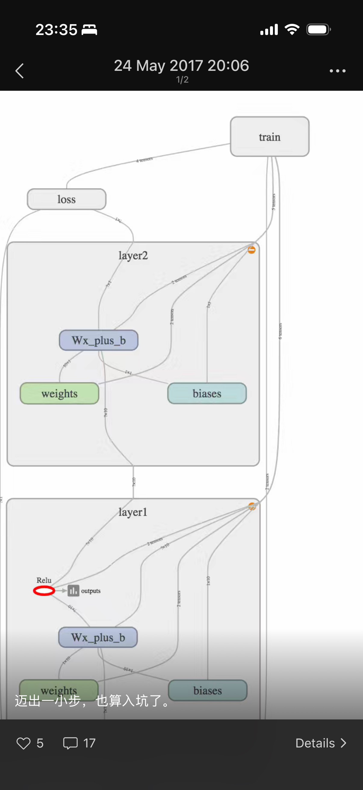
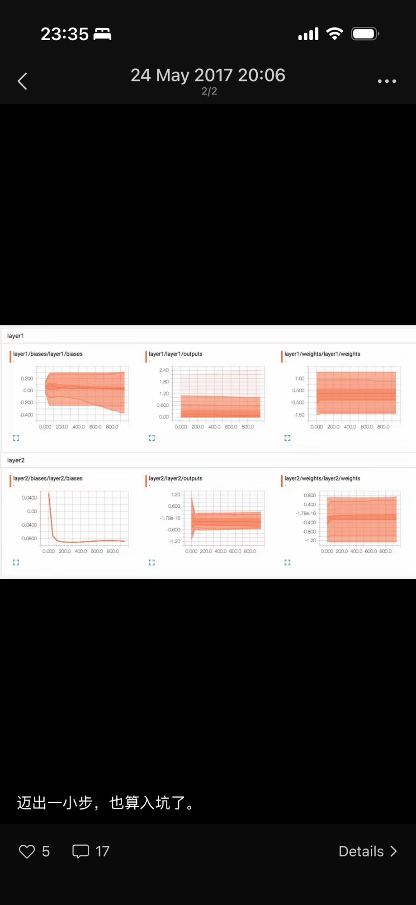
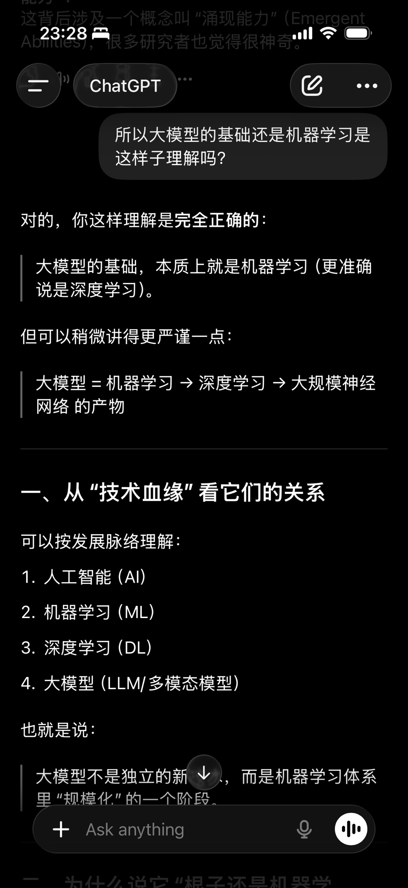
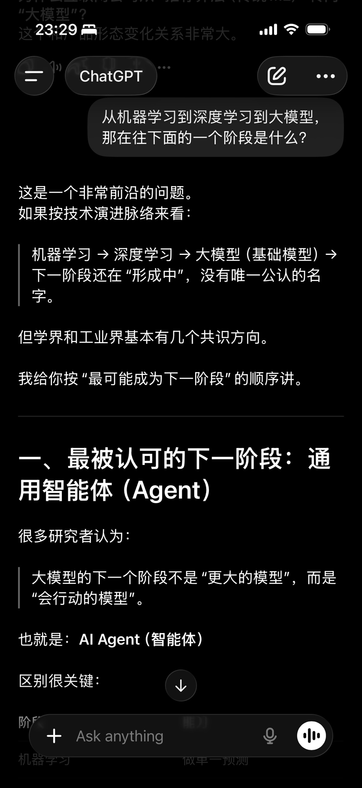
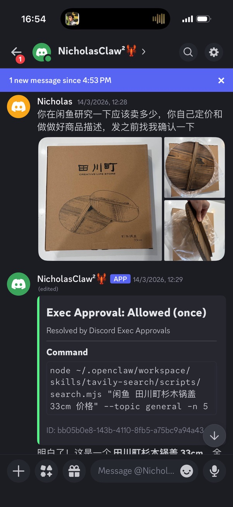
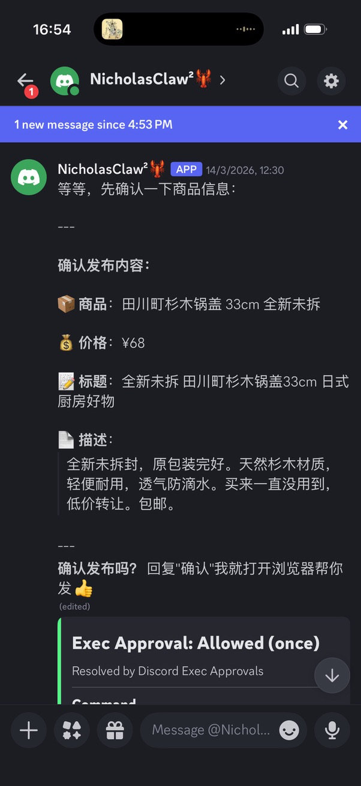
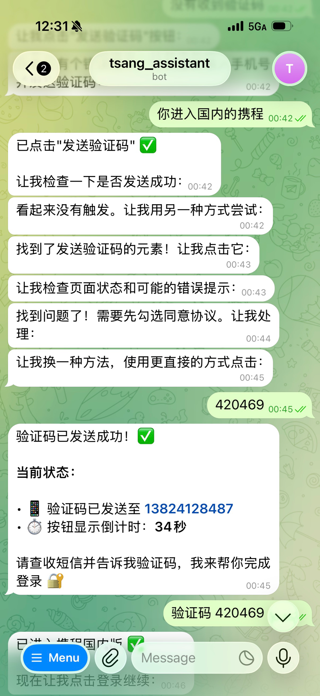
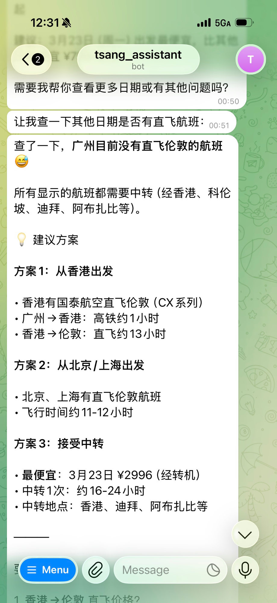

AI 技术演进与行业现状
我的三个 AI 探索案例
AI 效能真相与行动建议
基于历史数据寻找规律，预测未来。
典型应用：早期的商品推荐、垃圾邮件拦截。


神经网络的兴起，让机器能够自己提取特征。在图像识别、语音等特定领域超越人类表现。
涌现出了强大的自然语言理解、逻辑推理和泛化能力。机器开始"听得懂人话"了。


AI 不再只是一个聊天框，而是有了目标驱动力。它能拆解任务、调用外部工具（API）、执行动作。
比如通过 OpenClaw 这样的框架，将大模型接入飞书、Slack、Discord 等办公环境，实现跨平台的工作流自动化。
从"百模大战"的基建期，进入了现在的"应用落地和商业化"探索期。
大家都在寻找真正的 PMF（产品市场契合度），但普遍发现：做 Demo 很容易，做真正稳定交付的工程化产品极难。
结合 RPA（机器人流程自动化）与大模型，实现商品信息的自动提取、文案润色和自动上架。


AI 擅长处理标准化、重复性的重体力劳动。
通过让 AI 调用航班查询接口，根据特定意图筛选出合适的机票信息。


最终卡在了支付环节。这暴露了当前 AI Agent 最大的限制之一 — 难以跨越安全性要求极高的授权和闭环支付墙。
商业交易的最后一公里极难攻克。
在 MacBook 终端直接运行 Claude Code，只输入核心思路和骨架，让 AI 帮我补全格式、扩充细节，搭出完整的产品流程管理结构。
极大地缓解了"白纸焦虑"。AI 变成了我思考的放大器 — 它负责繁琐的文档化，我负责核心逻辑。
AI 确实能提高生产力，压缩我们在单点任务上的时间成本 — 写周报、查资料、写基础代码。
但目前它并没有带来质的飞跃。它更像是一个"优秀的实习生"，而不是"全能的资深专家"。
瓶颈 1：模型能力的上限
幻觉依然存在，复杂逻辑和极度垂直的专业领域，AI 依然无法完全满足精准无误的需求。
瓶颈 2：单节点 AI 的工作流摩擦成本
别把 AI 当神，也别觉得 AI 没用。把它当成一把高级的瑞士军刀。
每个人都应该具备使用 AI 的能力，培养与 AI"协同工作"的直觉。
先从手头最痛、最重复的一个小任务开始改造。哪怕只是用 AI 帮你写邮件、总结会议纪要。
AI 从 预测 → 感知 → 认知 → 执行，正在一步步接近通用智能。
但今天，它更像是一个高效但不完美的助手。
不要等待完美，从现在开始，让 AI 成为你工作方式的一部分。